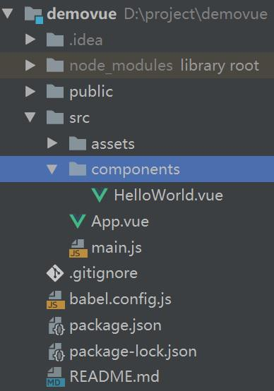
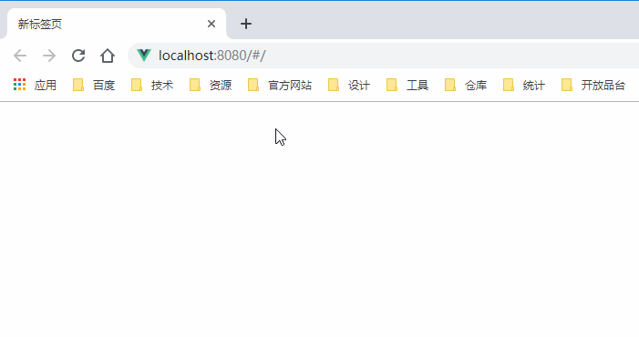
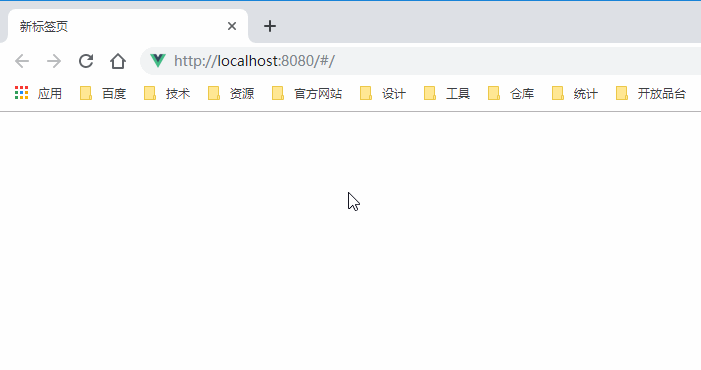
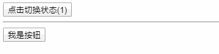

VUE 动态添加组件的两种实现
注意#，本文重点讲解的是：在同一个界面里，部分组件的动态显示与隐藏相关的功能。亦可以理解为界面展示根据服务端返回数据动态显示出来
本文适用于Vue2.0版本，如果你使用的是Vue3.0，那么本文部分内容可能需要按照实际情况定夺。
在Vue项目中，想要动态为页面上添加组件，是一件十分容易就能够实现的事情，这必须要得益于Vue框架的强力支持! 但有时候往往就是由于事情变得简单起来后，却突然忘记了要如何去实现。这大概就是对代码走火入魔的一种解释吧！
为页面动态添加组件，在实现区别上，我总结出了2种：
- 数据动态渲染已有组件。
- 先生成组件再添加到界面上。
〇、提出需求
假设现有一需求：要求实现某标签的添加，删除功能。效果如下：
这种效果想必还是比较合适用来理解组件的动态添加和移除的。 下面将对两种实现方案分别进行讲述。在这之前先预览一下案列项目结构，不用担心，这是使用 vue-cli@3 工具创建的 项目，应该和大多数人的项目目录结构相似：

一、数据动态渲染组件
在 Vue 的官方文档中， 条件渲染 、 列表渲染 这两处文档直接为你展示了如何通过数据来控制组件的渲染， 不过有一点要注意的是，Vue 官方文档，都是在讲述html文件中如何使用vue，而并没有在单文件组件的篇幅里进行 较多的讲解。虽然用法的确是相同的，但不免理解起来有一层隔阂。
此处，就将以单文件组件解释说明如何完成组件的动态渲染，也就是动态的添加和移除什么的。
1、建立标签组件
使用数据来动态渲染组件，前提是要先有这个组件，所以就先把组件创建出来，在 components 目录下创建名为 tag.vue 的组件，组件代码如下：
| <!-- tag.vue -->
<template>
<div class="tag">
{{ text }}
<button @click="onCloseClick">×</button>
</div>
</template>
<script>
export default {
name: "tag",
props: {
// 标签内容
text: String
},
methods: {
onCloseClick () {
// 将删除标签事件暴露除去
this.$emit("delete", this.text);
}
}
}
</script>
<style scoped>
.tag {
display: inline-block;
margin: 3px;
}
</style>
|
这个组件只有简单的删除功能，能够表示意思意思就好！
2、修改页面，实现渲染
修改 App.vue 文件，引入tag组件，然后根据数据对tag组件进行动态的渲染：
| <!-- App.vue -->
<template>
<div>
<h3>标签管理</h3>
<!-- 标签容器已经被初始化而且内容多余0条，则显示内容 -->
<div v-if="tags && tags.length > 0">
<tag v-for="tag in tags" :text="tag" :key="tag" @delete="onTagDelete"/>
</div>
<!-- 否则，标签只是被初始化了，但是没有数据 -->
<div v-else-if="tags">没有标签了</div>
<!-- 标签容器还没被初始化 -->
<div v-else>标签加载中...</div>
<button @click="addTag">添加标签</button>
</div>
</template>
<script>
import Tag from './components/tag.vue';
import Util from './Util';
export default {
name: 'app',
components: {
Tag
},
created() {
// 从网络加载tag数据.
Util.getTagsFromNet()
.then(result => {
if (result.code !== 200) {
return Promise.reject(new Error(result.message));
}
// 数据加载成功，将数据赋值给 tags 即可。
this.tags = result.data;
})
.catch(error => {
window.alert(error.message);
})
},
methods: {
// 添加tag
addTag() {
this.tags.push("标签" + this.tags.length);
},
onTagDelete(tag) {
// 从数组中移除。
this.tags.splice(this.tags.indexOf(tag), 1);
}
},
data() {
return {
tags: undefined, // 初始化是没有 tag数据的，在页面打开后，通过网络请求获取标签。
}
}
}
</script>
<style scoped></style>
|
运行程序，效果如下:

最终可以看到，这样的方式来实现动态组件渲染，宗旨就是：数据有，组件有，数据无，组件无。这也是Vue框架十分 建议的实现方式。我本人也建议使用这样的方式来实现。
二、先生成组件再添加到界面上
此方法不用事先将组件引入到界面中。而是当数据获取到时，使用数据建立组件，然后将组件添加到界面上。 这种思路显然完全正确无误，不过在Vue项目里，这样虽说可以实现，但是门槛略高。但了解这种方法也会为今后的开发 带来不少的便利。
1、了解 Vue 实例的创建
要进行下一步的讲解，先必须要了解 Vue 实例的创建。在我们平时开发Vue但也项目是，通常都能在 main.js 里看到这样的代码：
| // main.js
import Vue from 'vue'
import App from './App.vue'
Vue.config.productionTip = false
new Vue({
render: h => h(App),
}).$mount('#app')
|
这很容易理解，因为这样就算创建了我们单页面的整个根Vue实例了。那如果要创建我们自己想要的动态组件， 并且创建出来的组件要可以被加入到这个根实例里面去，又该怎么办？这个时候，就要祭出另一个强悍的方法了：
Vue.extend
这个方法允许我们自己随时创建 vue 实例，但是这个方法的学习门槛实在是高，先示列用法，下面是此方法的一个使用示列：
| // 创建组件逻辑
let TagClass = Vue.extend({
// 向界面渲染的dom方法。
render (createElement) {
return createElement(
'div',
{
style: {
display: 'inline-block',
margin: '3px',
backgroundColor: '#d9d9d9'
}
},
[
this.text,
createElement(
'button',
{
on: {
'click': this.onCloseClick
}
},
'×'
)
]
);
},
methods: {
onCloseClick () {
this.$el.remove();
// 将删除标签事件暴露除去
this.$emit("delete", this.text);
}
},
data () {
return {
text: "文本内容", // 什么这个tag标签使用的文字是传入的标签文字内容
}
}
});
// tag 就是想要的组件实例。
let tag = new TagClass();
|
对单文件组件有所心得的朋友肯定还是对这段代码能够摸清楚一些的，但是这个方法并不是所有人都能一目了然。 其中有：
- 没有了 template 模板。
- 新增了 render 方法。
现在使用 vue-cli@3 创建的项目，都是只包含vue运行时功能的vue项目，所以，在代码里动态构建的组件，不能使用 template 了，那些组件模板页面其实在build的时候也会转换成render函数实现，所以在代码里动态构建组件只能使用 render 方法来进行页面的渲染。 而这个方法不难，难点可能就是render方法参数 createElement，这个参数它是一个可执行的方法，这个方法有3个参数：
| createElement(参数1, 参数2, 参数3);
// 参数1： 可以是别的组件，可以是原生dom组件。
// 参数2： 一个对象，这个对象里的数据将作为 "参数1" 的属性信息写入到组件或dom上。
// 参数3： 数组或字符串或createElement方法返回的内容， 这个部分的数据将作为 "参数1" 的子内容出现。
|
createElement 参数2 详解
这个方法能够完成任何dom的创建以及嵌套都没问题，难点就在于如何去灵活的使用它，首要一点就是了解参数的具体含义， 参数2 作为dom属性配置，承载着许多的必要功能，下面是截取自vue官网的对象配置详细介绍：
| // 参数2 配置对象介绍
{
// 与 `v-bind:class` 的 API 相同，
// 接受一个字符串、对象或字符串和对象组成的数组
'class': {
foo: true,
bar: false
},
// 与 `v-bind:style` 的 API 相同，
// 接受一个字符串、对象，或对象组成的数组
style: {
color: 'red',
fontSize: '14px'
},
// 普通的 HTML 特性
attrs: {
id: 'foo'
},
// 组件 prop
props: {
myProp: 'bar'
},
// DOM 属性
domProps: {
innerHTML: 'baz'
},
// 事件监听器在 `on` 属性内，
// 但不再支持如 `v-on:keyup.enter` 这样的修饰器。
// 需要在处理函数中手动检查 keyCode。
on: {
click: this.clickHandler
},
// 仅用于组件，用于监听原生事件，而不是组件内部使用
// `vm.$emit` 触发的事件。
nativeOn: {
click: this.nativeClickHandler
},
// 自定义指令。注意，你无法对 `binding` 中的 `oldValue`
// 赋值，因为 Vue 已经自动为你进行了同步。
directives: [
{
name: 'my-custom-directive',
value: '2',
expression: '1 + 1',
arg: 'foo',
modifiers: {
bar: true
}
}
],
// 作用域插槽的格式为
// { name: props => VNode | Array<VNode> }
scopedSlots: {
default: props => createElement('span', props.text)
},
// 如果组件是其它组件的子组件，需为插槽指定名称
slot: 'name-of-slot',
// 其它特殊顶层属性
key: 'myKey',
ref: 'myRef',
// 如果你在渲染函数中给多个元素都应用了相同的 ref 名，
// 那么 `$refs.myRef` 会变成一个数组。
refInFor: true
}
|
现在，有了对 extend 方法的了解和 createElement 方法的加持，还有什么办不到的。 要了解更多 Vue.extend 方法的详情，请参考：Vue官方API。这里还有一篇描述使用构造函数时如何传递参数的记录《构造函数式组件如何传递参数》。 要了解更多 createElement 方法的详情，请参考：Vue官方文档。
2、编写代码，实现效果。
现在可以修改 App.vue 文件，将其修改为先生成组件后显示到界面的逻辑，修改完成后代码如下：
| <template>
<div>
<h3>标签管理</h3>
<!-- 放置tag的容器，从网络获取的tags都要放在这个div里面 -->
<div ref="tagsContext">
<div v-if="!tags">标签加载中...</div>
<div v-else-if="tags && tags.length === 0">没有标签</div>
</div>
<button @click="addTag">添加标签</button>
</div>
</template>
<script>
import Util from './Util';
export default {
name: 'app',
components: {},
created() {
// 从网络加载tag数据.
Util.getTagsFromNet()
.then(result => {
if (result.code !== 200) {
return Promise.reject(new Error(result.message));
}
// 数据加载成功，将数据赋值给 tags 即可。
this.tags = result.data;
// 拿到了数据，进行渲染：
for (let i = 0; i < this.tags.length; i++) {
this.initTagComponentAndShowTag(this.tags[i]);
}
})
.catch(error => {
window.alert(error.message);
})
},
methods: {
// 添加tag
addTag() {
let tagText = "标签" + this.tags.length;
this.tags.push(tagText);
this.initTagComponentAndShowTag(tagText);
},
// 有tag被删除
onTagDelete(tag) {
// 从数组中移除。
this.tags.splice(this.tags.indexOf(tag), 1);
},
// 初始化一个tag组件并且显示到界面上。
initTagComponentAndShowTag (tagText) {
let tag = Util.newTag(tagText);
// 添加删除监听
tag.$on("delete", this.onTagDelete);
// 挂载组件，即创建虚拟dom。
tag.$mount();
// 将组件添加到显示tag的div里面
this.$refs.tagsContext.appendChild(tag.$el);
}
},
data() {
return {
tags: undefined, // 初始化是没有 tag数据的，在页面打开后，通过网络请求获取标签。
}
}
}
</script>
<style scoped></style>
|
再次运行程序，得到效果，与使用数据动态渲染完全一致：

这次就不再是先使用 Tag 组件了，为了避嫌，我甚至连 Tag 组件都没有引入。可以看到，在网络数据获取完成时， 通过循环构造组件并添加到了界面上，在 initTagComponentAndShowTag 方法中，使用Util.newTag 方法完成了组件的动态创建。由于组件的创建方法属于比较低层次级别方法，所以与界面逻辑剥离开。整个 Util.js 的代码如下：
| import Vue from 'vue';
export default {
newTag (tagText) {
// 创建组件逻辑
let TagClass = Vue.extend({
// 向界面渲染的dom方法。
render (createElement) {
return createElement(
'div',
{
style: {
display: 'inline-block',
margin: '3px',
backgroundColor: '#d9d9d9'
}
},
[
this.text,
createElement(
'button',
{
on: {
'click': this.onCloseClick
}
},
'×'
)
]
);
},
methods: {
onCloseClick () {
// 移除dom
this.$el.remove();
// 然后将删除标签事件暴露除去
this.$emit("delete", this.text);
}
},
data () {
return {
text: tagText, // 为这个tag标签使用的文字是传入的标签文字内容
}
}
});
return new TagClass();
},
// 模拟从网络获取tag数据。
getTagsFromNet () {
return new Promise((resolve) => {
setTimeout(() => {
let tags = [];
for (let i = 0; i < 6; i++) {
tags.push("标签" + i);
}
resolve({
code: 200,
data: tags,
msg: 'success'
});
}, 2000);
});
}
}
|
代码中注释比较详细，应该能了解其中含义。不论时那种方案最终都能实现效果，但是显然第一种方案代码更加优雅， 第二种代码显得比较凌乱(也许是我写的比较凌乱)。从开发复杂度上来讲，第一种也是远胜第二种。不过了解了第二种 方法，收益也是非常的肥厚！
三、归纳总结
这两种方法建议使用第一种去实现组件的添加或移除，第二种方案作为知识点要掌握。其中难点在于对Vue实例的本质了解、 对Vue渲染方法的了解，以及对Vue实例的使用熟悉程度。其中本例最重要的就是结合使用 Vue.extend 和 createElement 方法。
本文中涉及的项目资料你可以在百度网盘下载， 提取码：m3y1。注意本资料不包含第四小节（下一节）的内容。
四、组件动态切换
本小节为后来新增的内容，为更加完善本文标题所传达的知识点，本小节有必要新增。
有时候我们在使用组件的过程中，会出现这样一种需求： 在同一个位置根据不同的某个状态值显示不同的组件 。比如说常见的订单状态标志，存在着：未支付、已支付、配送中、派件中等等状态时，我们就要根据订单数据里某一个状态来动态显示这个状态标志了。对于这种简单标志效果展示性的需求，我们可以直接使用v-if语句来实现，在同一个位置根据不同的状态显示不同的标志。
1、使用 v-if
对于简单组件，或者直接是一个dom元素，我们使用v-if是可以的，不仅提升可读性后期维护性也会大大提升，扩展空间也很大。就像是这样：
| <div>
<span class='un-pay' v-if='orderStatus === 1'>未支付</span>
<span class='pay-ed' v-else-if='orderStatus === 2'>已支付</span>
<span class='dliving' v-else-if='orderStatus === 3'>配送中</span>
<span class='taking' v-else-if='orderStatus === 4'>已支付</span>
<span class='other' v-else-if='orderStatus === 5'>等等其他更多状态</span>
</div>
|
在从上述代码可以看到，在div下同一时间永远都只会显示一个标志。对于这种简单组件或dom，直接使用v-if会更加直观。但如果我们要根据某个标志来显示不同的复杂组件时，如果再写一堆v-if在这儿堆积起来，显得有点臃肿且难以理解了。
为了更优雅的实现这样的需求，下面介绍另一种解决方案。
2、内置组件 component
component其实算不上是一个组件，但它有提供了一个强大的功能，就好像它是一个‘床’，这个‘床’上要放一个什么组件，可以你自己来确定，甚至还可以在这一个‘床’上随时来回切换各个不同的自定义组件。
那么有这样一个好东西，必须要用起来。下面来看一个典型的场景：

这个示列展示了在同一个component‘床’提供的位置里动态的根据状态显示了不同的自定义组件。下面来看代码：
| <template>
<!-- 用这个按钮来演示触发状态变化 -->
<button v-on:click="onChangeClick">点击切换状态({{ someStatus }})</button>
<hr>
<!-- 使用内置 component 组件，在这里面将显示我们希望的自己的组件 -->
<component v-bind:is="currentComponent"></component>
</template>
<script>
import mybutton from './mybutton';
import myfile from './myfile';
import myimg from './myimg';
export default {
// 这三个组件都要在本界面展示，所以都注册进来。
components: {
mybutton: mybutton,
myfile: myfile,
myimg: myimg
},
data() {
return {
// 定义当前展示的是哪一个组件，默认就展示 mybutton 好了
currentComponent: 'mybutton',
// 定义状态变量
someStatus: 1, // 假设某状态
// 1、显示mybutton组件
// 2、显示myfile组件
// 3、显示myimg组件
}
},
methods: {
// 点击切换状态按钮
onChangeClick: function () {
// 逻辑很简单，就是从1到3来回变化
if (this.someStatus === 3) {
this.someStatus = 1;
} else {
this.someStatus++;
}
}
},
watch: {
// 监听状态变化
someStatus(newvalue) {
// 逻辑也很简单，根据不同的状态为 currentComponent 赋不同的值就可以了
if (newvalue === 1) {
this.currentComponent = 'mybutton';
} else if (newvalue === 2) {
this.currentComponent = 'myfile';
} else if (newvalue === 3) {
this.currentComponent = 'myimg';
}
}
}
}
</script>
|
上述代码中可以看到，使用component内置组件，他可以根据你传递的 is变量来确定具体使用哪一个组件，我们这里演示使用的组件都不需要参数，而如果你的自定义组件又需要一些参数的时候，如何将这些参数通过component传递给自己的组件呢，其实很简单：
| <component v-bind:is='xxx' name='Jack' :age='age'></component>
|
简单的将参数写在component上就可以了，你在你自己的组件里怎么定义的，在这里也整么使用，上述代码写了2个参数，一个固定值 Jack, 和另一个变量值 age。如果你各个自定义组件又不同的参数又该怎么办？不用担心，你都可以全写在这个component上面的。
注意事项：每当切换 is 的值时，都会创建新的对应组件，在上列中来说，就是每次状态切换，为 currentComponent 赋新值时，component 里面显示的我们自己的组件每次都会新建一个，意味着如果你的自定义组件里有维护着状态逻辑的话，那么可能会因为这样的切换而丢失。而如何让它们切换的时候不新建，而是复用之前已经创建好的呢？只需要在 component 外面包裹一层 <keep-alive></keep-alive> 就可以啦。
Author: Microanswer
Source: https://www.microanswer.cn/blog/9